|
Xudong Cai I am a Ph.D. candidate at Renmin University of China (RUC), advised by Yongcai Wang and Deying Li, and a visiting student in the Physical Vision Group (PVG) at Nanyang Technological University (NTU), working with Chuanxia Zheng. My research focuses on 3D computer vision, with an emphasis on 3D scene reconstruction and generation; I welcome discussions and collaborations—feel free to reach out. |
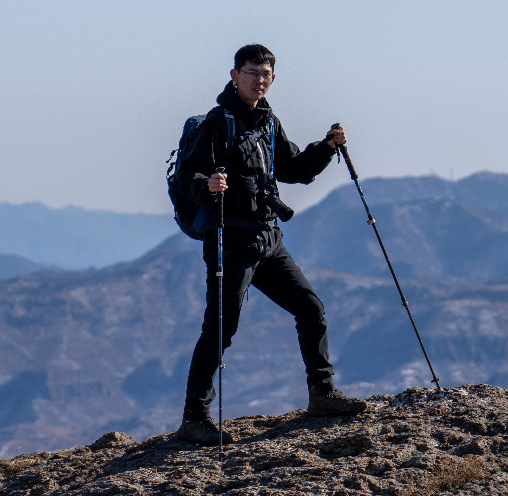 |
{kind=link}
ResearchI mainly work on 3D computer vision, with an emphasis on 3D scene reconstruction and generation.
|
Publications
The papers are listed in the following order.
| 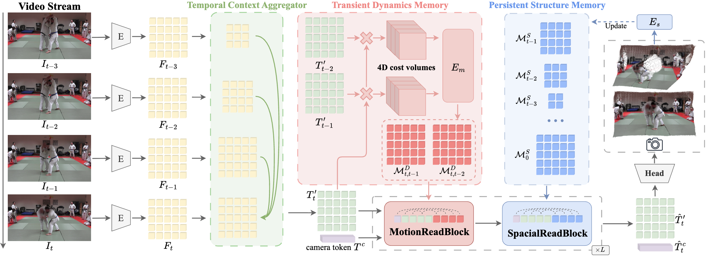 |
Mem4D: Decoupling Static and
Dynamic
Memory for Dynamic Scene Reconstruction
Xudong Cai, Shuo Wang, Peng Wang, Yongcai Wang, Zhaoxin Fan, Wanting Li, Tianbao Zhang, Jianrong Tao, Yeying Jin, Deying Li AAAI, 2026 paper / Project / Code Mem4D decouples static geometry and dynamic motion by introducing persistent structure memory and transient dynamics memory, enabling high‑fidelity dynamic scene reconstruction with global consistency. |

|
MonoDream: Monocular Vision‑Language Navigation with Panoramic
Dreaming
Shuo Wang, Yongcai Wang, Zhaoxin Fan, Yucheng Wang, Maiyue Chen, Kaihui Wang, Zhizhong Su, Wanting Li, Xudong Cai, Yeying Jin, Deying Li AAAI, 2026 paper / Project / Code We propose a monocular vision‑language navigation framework that "dreams" panoramic context from partial observations to bridge the gap between limited field‑of‑view inputs and global spatial reasoning. |
| 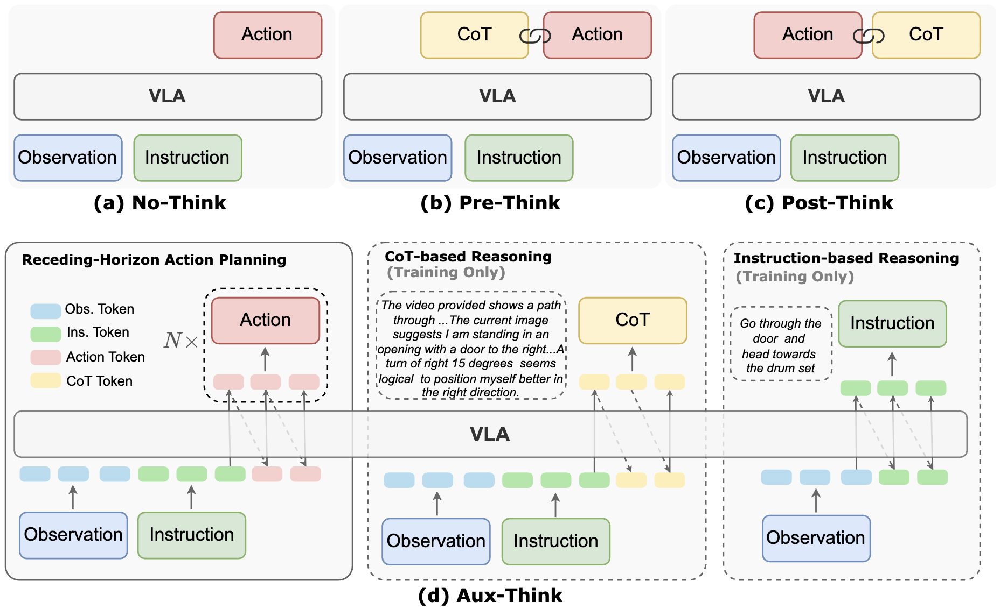 |
Aux‑Think: Exploring Reasoning Strategies for Data‑Efficient
Vision‑Language Navigation
Shuo Wang, Yongcai Wang, Wanting Li, Xudong Cai, Yucheng Wang, Maiyue Chen, Kaihui Wang, Zhizhong Su, Deying Li, Zhaoxin Fan NeurIPS, 2025 paper / Project / Code This work explores auxiliary reasoning tasks to improve data efficiency in vision‑language navigation, allowing agents to learn complex navigational strategies without massive datasets. |
| 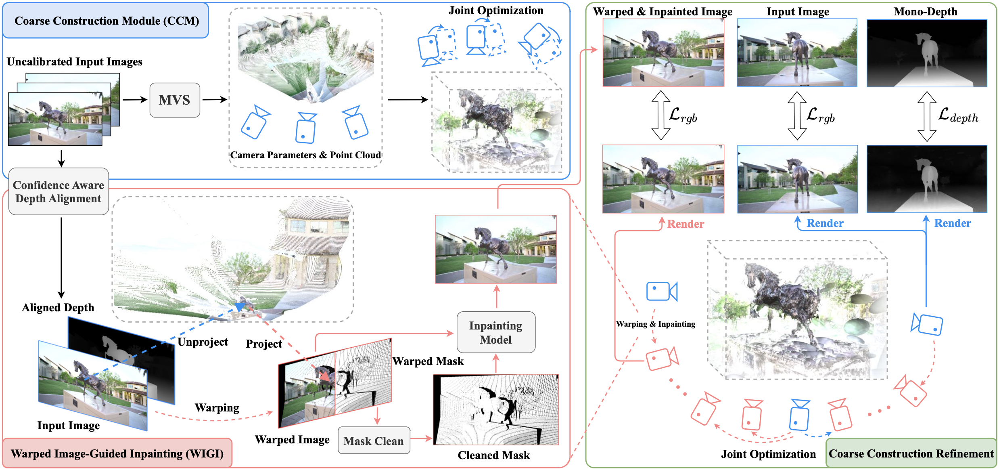 |
Dust to Tower: Coarse‑to‑Fine
Photo‑Realistic Scene Reconstruction from Sparse Uncalibrated Images
Xudong Cai, Yongcai Wang, Zhaoxin Fan, Haoran Deng, Shuo Wang, Wanting Li, Deying Li, Lun Luo, Minhang Wang, Jintao Xu arXiv, 2024 paper / Project / Code Dust to Tower introduces an accurate and efficient coarse‑to‑fine framework that jointly optimizes 3D Gaussian Splatting and image poses from sparse, uncalibrated images, enabling photo‑realistic scene reconstruction. |
| 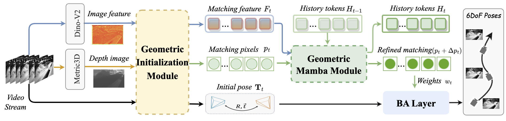 |
MambaVO: Deep Visual Odometry Based on Sequential Matching
Refinement and Training Smoothing
Shuo Wang, Wanting Li, Yongcai Wang, Zhaoxin Fan, Zongxiang Huang, Xudong Cai, Jun Zhao, Deying Li CVPR, 2025 paper / Project / Code MambaVO integrates sequential matching refinement and a trending‑aware training penalty into a Mamba‑based architecture for efficient visual odometry, yielding robust pose estimation and mapping. |
| 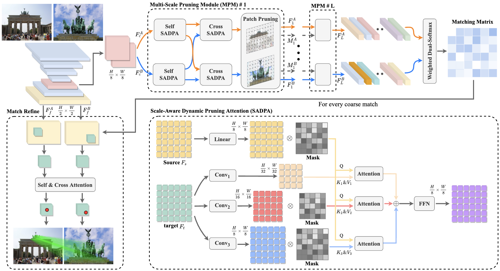 |
PRISM: PRogressive
dependency maxImization for Scale‑invariant image Matching
Xudong Cai, Yongcai Wang, Lun Luo, Minhang Wang, Deying Li, Jintao Xu, Wenting Gu, Rui Ai ACM Multimedia, 2024 paper / Project / Code PRISM maximizes progressive dependency to explicitly model scale relationships, improving feature matching accuracy for images with extreme scale variations. |
| 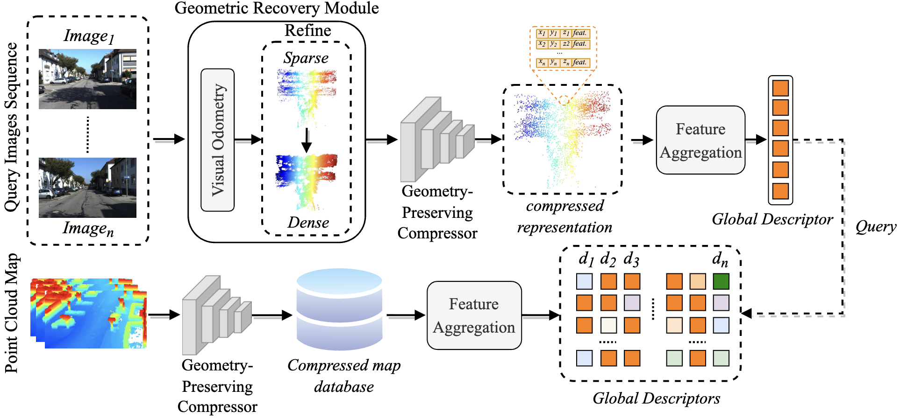 |
Voloc: Visual Place
Recognition by Querying Compressed LiDAR Map
Xudong Cai, Yongcai Wang, Zongxiang Huang, Yiqing Shao, Deying Li ICRA, 2024 paper / Project / Code Voloc performs cross‑modal visual place recognition by querying a compressed LiDAR map with visual images, achieving robust localization in large‑scale environments with reduced storage. |
| 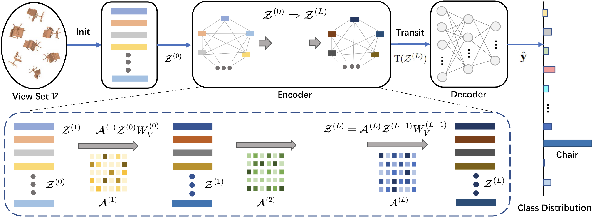 |
Vsformer: Mining
Correlations in Flexible View Set for Multi‑view 3D Shape Understanding
Hao Sun, Yongcai Wang, Peng Wang, Haoran Deng, Xudong Cai, Deying Li IEEE TVCG, 2024 paper / Project / Code Vsformer is a transformer‑based architecture that mines correlations within a flexible set of views to enhance multi‑view 3D shape classification and retrieval. |
| 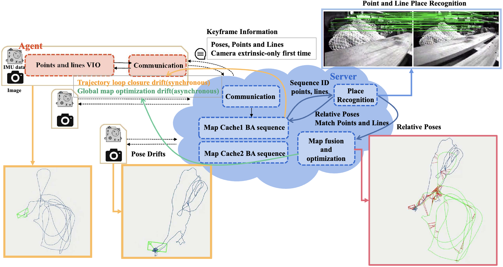 |
ColSLAM: A
Versatile Collaborative SLAM System for Mobile Phones Using Point‑Line Features and Map
Caching
Wanting Li, Yongcai Wang, Yongyu Guo, Shuo Wang, Yu Shao, Xuewei Bai, Xudong Cai, Qiang Ye, Deying Li ACM Multimedia, 2023 paper / Project / Code ColSLAM is a collaborative SLAM system designed for mobile phones that fuses point and line features and introduces a novel map caching mechanism to support robust multi‑agent mapping. |
| 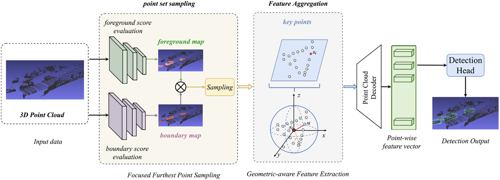 |
An Object Detection
Algorithm Combining Semantic and Geometric Information of the 3D Point Cloud
Zongxiang Huang, Yongcai Wang, Jin Wen, Peng Wang, Xudong Cai Advanced Engineering Informatics, 2023 paper / Project / Code This work fuses semantic features and geometric structures from point clouds to improve 3D object detection accuracy in complex environments. |
| 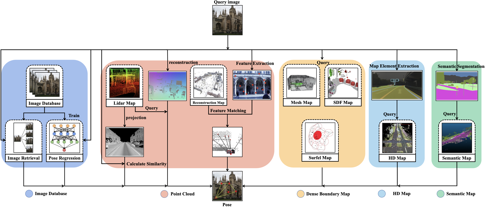 |
Survey on Visual Relocalization in Prior Map (基于先验地图的视觉重定位方法综述)
Xudong Cai, Yongcai Wang, Xuewei Bai, Deying Li Journal of Software, 2024 paper / Project / Code This Chinese‑language survey categorizes visual relocalization methods based on prior maps (2D, point‑cloud, etc.) and discusses current challenges and future directions. |